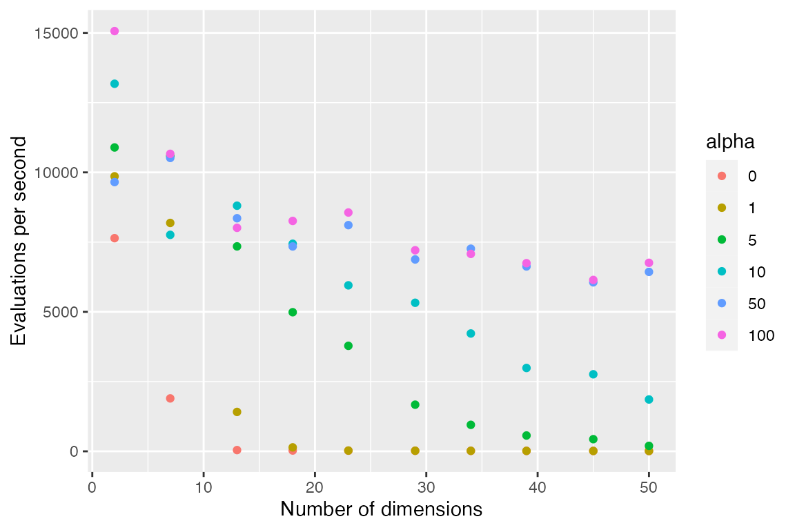
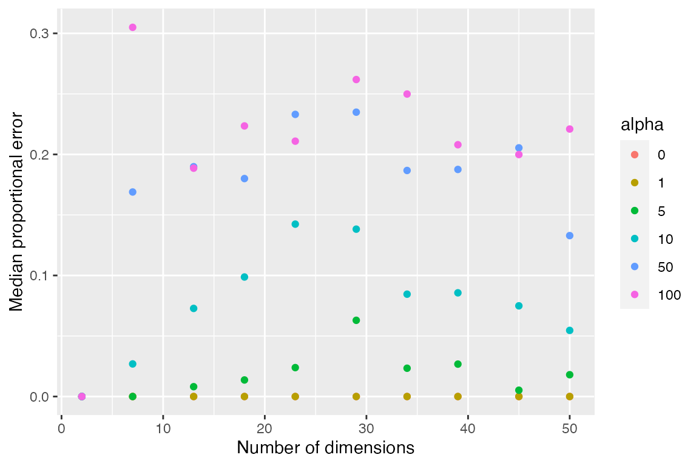

The kdtools package implements approximate nearest neighbors. This is done in the standard way by shrinking the search radius by a factor of \(1 / (1 + \alpha)\). Once the greedy descent phase is completed and candidate nearest neighbors are queued, the algorithm interrogates adjacent half-planes while backtracking if the search key is sufficiently close to the half-plane boundary. The factor \(\alpha\) reduces the definition of sufficiently close. Given a sufficiently large \(\alpha\), the algorithm is entirely greedy and ignores any points not in the nearest half-plane.
Approximate search is accomplished by setting the a argument to a value grater than zero.
key <- runif(13)
x <- kd_sort(matrix(runif(13 * 1e5), nr = 1e5, nc = 13))
cbind(kd_nn_indices(x, key, 3, distances = TRUE),
kd_nn_indices(x, key, 3, distances = TRUE, a = 10))
#> index distance index distance
#> 1 75714 0.4487527 77276 0.5165679
#> 2 88220 0.4959026 75728 0.5379692
#> 3 27292 0.4986780 77285 0.5680585The results below show number of searches completed per second with different number of dimensions (length of the search key) and different values of \(\alpha\). Number of evaluations is the median of 33 trials searching among 1e+05 vectors containing uniform random deviates.

The following shows the relative error \((d_2 - d_1) / d_1\) where \(d_2\) is the approximate nearest neighbor and \(d_1\) is the exact nearest neighbor distance. Notice these results suggest that greedy search is optimal for 2-dimensions, at least for uniform random vectors. The results will depend on the details of the input data.
